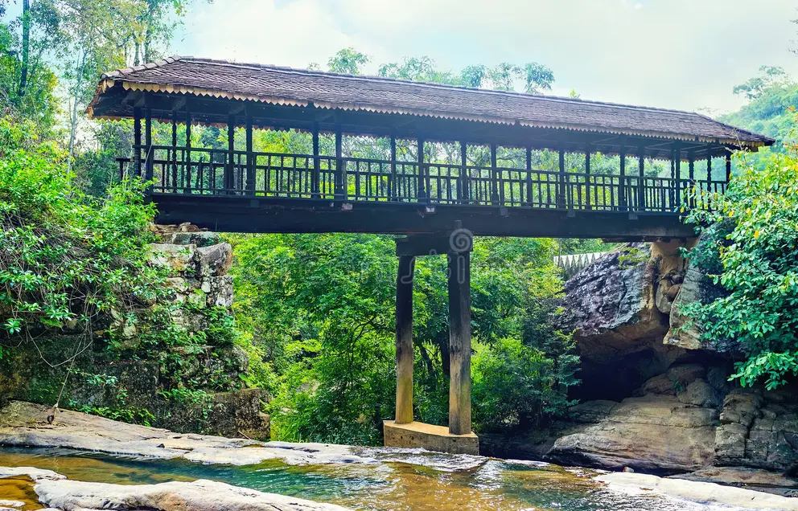

The oldest wooden bridge in Sri Lanka, an incredible 400-year-old architectural masterpiece built entirely without a single nail.
The Bogoda Wooden Bridge, situated across the Galanda Oya near Badulla, is a unique and structurally magnificent historical monument. Dating back to the 16th century Dambadeniya period, it is the oldest surviving wooden bridge on the island. Remarkably, the bridge was constructed entirely without the use of metal nails or bolts, using instead intricate joinery and wooden pegs.
The bridge is also unique for featuring a beautiful tiled roof (Ambalama), designed to provide shelter for ancient travelers and pilgrims. Exploring the bridge reveals incredible woodwork and a timeless connection to the island's high-altitude wilderness. The nearby Bogoda Raja Maha Vihara, an ancient cave temple, adds to the site's profound sense of peace and historic depth.
Back to Badulla Hub